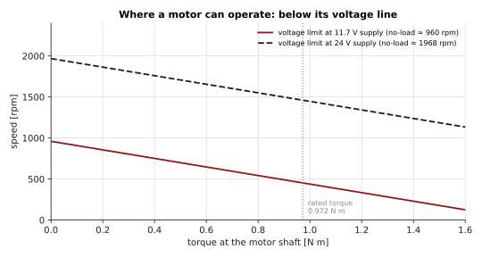
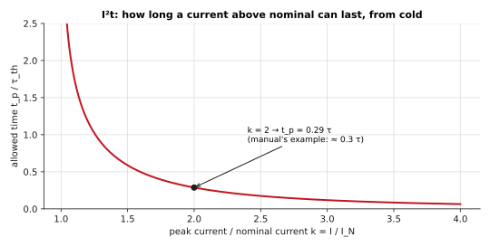
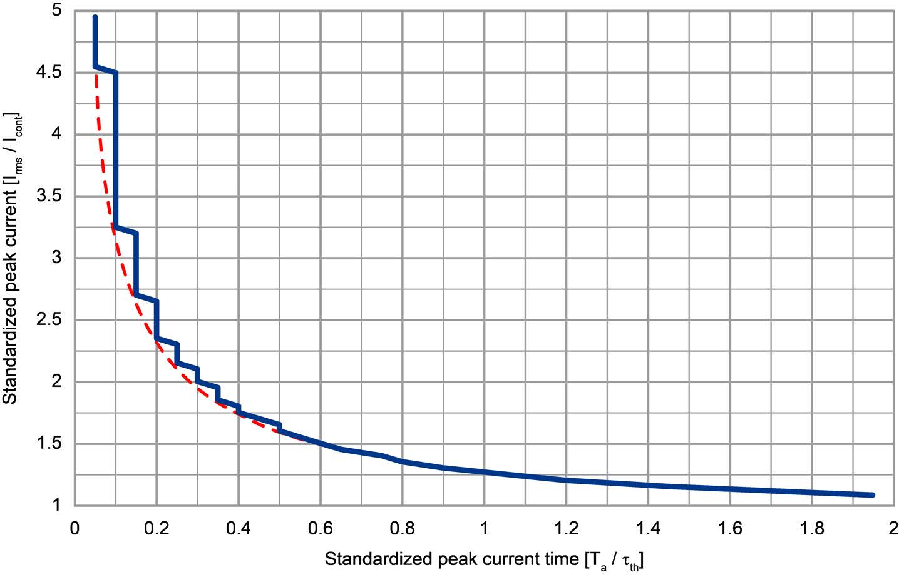
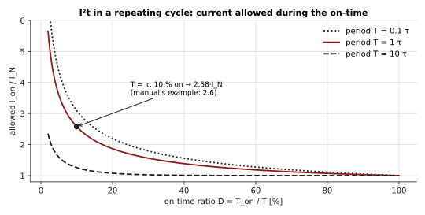
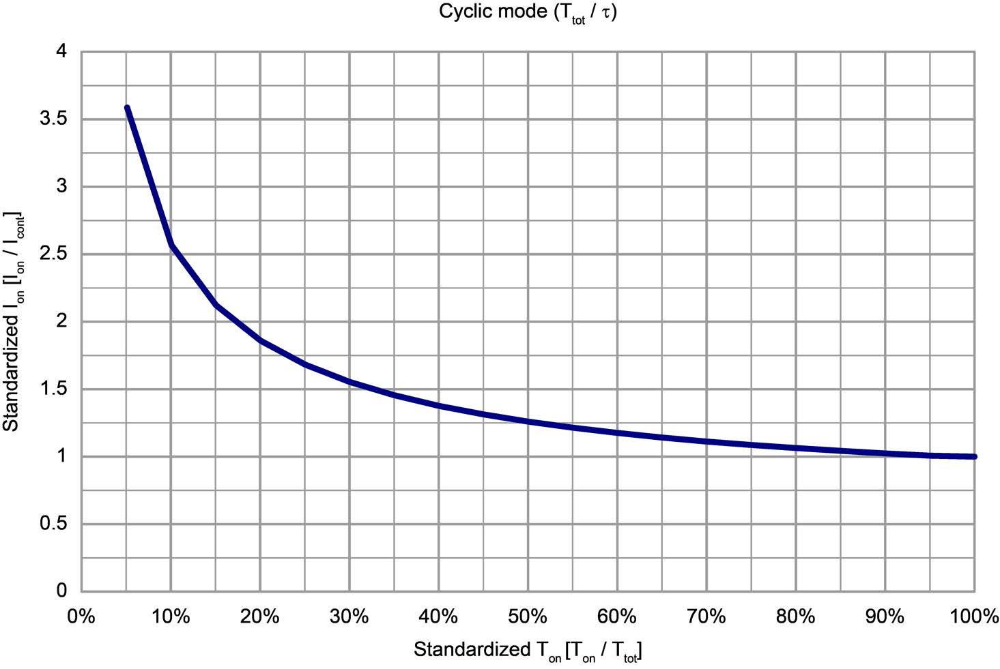

Motor and thermal model#
The EPOS4 needs a few numbers about the motor - the motor data - to control it, to protect
it, and to express torque. They come from the motor's data sheet, are entered once (EPOS
Studio's startup wizard, or MotorConfigs) and saved on the drive.
The motor data#
| Data sheet | Object | EposLib (MotorConfigs) |
Unit on the bus |
|---|---|---|---|
| Motor type (DC, EC sinusoidal, EC block) | 0x6402 |
motorType |
- |
| Nominal current (max. continuous) \(I_N\) | 0x3001:01 |
nominalCurrent |
mA |
| Output current limit \(I_{max}\) | 0x3001:02 |
outputCurrentLimit |
mA |
| Number of pole pairs | 0x3001:03 |
numberOfPolePairs |
- |
| Thermal time constant of the winding \(\tau_{th}\) | 0x3001:04 |
thermalTimeConstant |
0.1 s |
| Torque constant \(K_t\) | 0x3001:05 |
torqueConstant |
µN·m/A |
| Terminal resistance \(R\) | 0x3002:01 |
electricalResistance |
mΩ |
| Terminal inductance \(L\) | 0x3002:02 |
electricalInductance |
µH |
| - (computed) rated torque \(\tau_{rated}\) | 0x6076 |
ratedTorque, read-only |
µN·m |
The pole pairs and the motor type can only be written with no power on the motor.
Torque#
A brushed DC motor, or a brushless motor under field-oriented control, produces a torque proportional to its current:
The drive defines the rated torque from the motor data, as the torque at nominal current:
and every torque object (0x6071 target, 0x6077 actual, 0x60B2 offset) is in
thousandths of it:
Example - the motor of the team's test: \(I_N = 9.28\) A, \(K_t = 104.79\) mN·m/A.
so 1000 ‰ = 0.9724 N·m, 100 ‰ = 0.0972 N·m, and a request of 0.5 N·m is
\(1000 \times 0.5 / 0.9724 = 514\) ‰. EposLib does this conversion in
StageTargetTorque(0.5_Nm) and TorqueToPerThousand(); GetMotorRatedTorque() reads
\(\tau_{rated}\).
All of it is at the motor shaft. Through a gearbox of reduction \(N\) (and efficiency \(\eta\)), the output torque is \(\tau_{out} = \eta\, N\, \tau\).
Rated torque 0
If the nominal current or the torque constant was never configured, \(\tau_{rated} = 0\) and no torque value has a meaning. EposLib refuses every N·m conversion in that case.
Speed and the voltage limit#
A turning motor generates a back-EMF proportional to its speed. The speed constant \(K_n\) (rpm/V) is the inverse of the torque constant, in other units:
For \(K_t = 104.79\) mN·m/A: \(K_n = 30000 / (\pi \cdot 104.79) = 91.1\) rpm/V.
The EPOS4 outputs at most \(0.9\,U_{CC}\) (Feature Chart). Neglecting the resistive drop, the no-load speed at a supply \(U_{CC}\) is therefore about
At 11.7 V that is \(91.1 \times 0.9 \times 11.7 \approx 960\) rpm; at 24 V, about 1970 rpm. Under load the available speed falls along the motor's speed-torque line, by \(R/K_t\) per unit of current:

This is why, in torque mode, a free motor accelerates until it reaches about \(n_0\) and the measured torque then drops far below the command: there is no voltage left to push more current.
The I²t current limit#
The thermal model#
The winding heats with the copper losses \(P = R\, i^2\) and cools through a thermal resistance; its temperature rise follows a first-order system with the thermal time constant of the winding \(\tau_{th}\):
The motor may run indefinitely at its nominal current \(I_N\): that defines the allowed steady-state rise \(\Delta\vartheta_{max} = R_{th} R I_N^2\). The EPOS4 tracks this model from three motor data - \(I_N\), \(I_{max}\) and \(\tau_{th}\) - assuming 25 °C ambient (Firmware Specification, 3.11.2), and limits the output current so the modelled temperature never exceeds \(\Delta\vartheta_{max}\). With the normalised current \(k = i/I_N\) and normalised temperature \(\theta = \Delta\vartheta / \Delta\vartheta_{max}\):
How long a peak can last#
Starting cold (\(\theta = 0\)) at a constant \(k > 1\), the solution is \(\theta(t) = k^2\,(1 - e^{-t/\tau_{th}})\), which reaches the limit \(\theta = 1\) at

Check against the manual's example (3.11.2): nominal 1470 mA, output limit 2940 mA, so \(k = 2\), and \(\tau_{th} = 2.8\) s:
The manual reads 0.3·τ from its curve, 840 ms - the same within the precision of reading a chart.

Repeating cycles#
An axis that draws \(k\,I_N\) for \(T_{on}\) out of every period \(T\), and nothing otherwise, settles into a periodic temperature. Its peak stays at the limit when
For a long period (\(T \gg \tau_{th}\)) this tends to 1 - the peak must be sustainable on its own; for a short one (\(T \ll \tau_{th}\)) it tends to \(\sqrt{T/T_{on}} = 1/\sqrt{D}\), the RMS rule.

Check against the manual's example: period 2.8 s = \(\tau_{th}\), on-time 280 ms (10 %):
The manual gives 2.6, so \(2.6 \times 1470 \approx 3820\) mA.

Watching it from EposLib#
auto & i2t = motor.GetMotorI2tPercent().Refresh(); // 0x3200:01
auto & stage = motor.GetPowerStageI2tPercent().Refresh(); // 0x3200:02
if (i2t.GetValue() > 100) {
// the drive is already limiting the current to protect the motor
}
Above 100 % the drive limits the current: the axis gets weaker - a joint that sags after a long hold - and Statusword bit 11 (internal limit active) is set. Choose \(I_{max}\) and \(\tau_{th}\) from the data sheet, not higher: the model is what protects the winding.
Speed limits#
| Limit | Object | Purpose |
|---|---|---|
| Max motor speed | 0x6080 |
from the motor data sheet; protects the motor |
| Max gear input speed | 0x3003:03 |
from the gearbox data sheet; protects the gearbox |
| Max profile velocity | 0x607F |
caps the profile modes' velocity |
The system speed is limited by the smaller of the first two. In CSP and CSV they limit and monitor the following error during PDO communication.
Electrical data and the current loop#
\(R\) and \(L\) set the electrical time constant \(\tau_e = L/R\) of the winding, which the current controller must be faster than - a reason the current loop runs at 25 kHz. For a PI current loop that cancels the winding pole, \(K_{I,i}/K_{P,i} = R/L\); see Control loops.